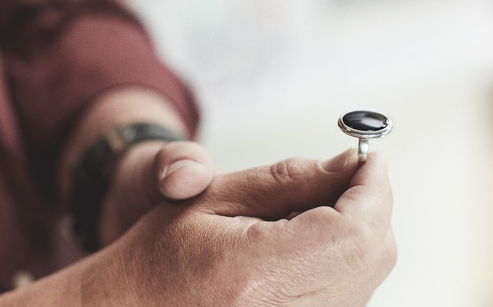
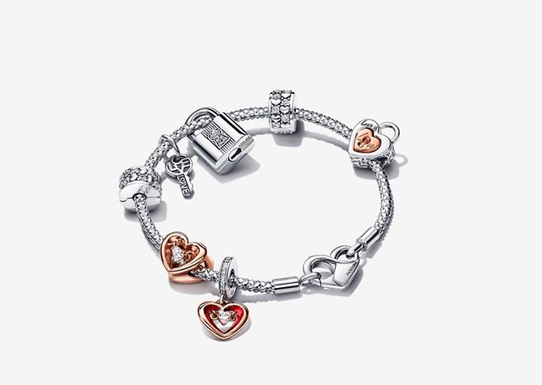
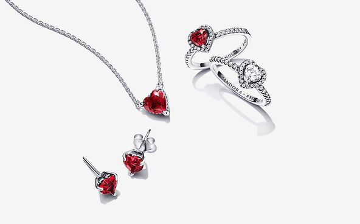

Pandora

Pandora se esfuerza mucho para encontrar no solo los materiales más bonitos para cada diseño de joyería, sino también los más sostenibles.
¿Qué temas te interesan?
Las joyas de Pandora giran en torno a la idea de expresar quién eres a través de tu estilo. Da voz a las cosas que amas a través de piezas que te recuerdan todo lo que eres y todo lo que amas.
¡LA TENDENCIA DEL MOMENTO!
- Collar de cadena con tachuelas Pandora Moments
- Disney 100th Anniversary Moments Pulsera de cadena de serpiente
- Anillo Corazón Elevado Brillante
- Anillo Brillante Doble Corazón
Materiales y Artesanía

Materiales
Pandora trabaja duro para encontrar no solo los materiales más bonitos para cada diseño de joyeria, sino también los más responsables. Desde la plata de primera ley o el oro, a las aleaciones de metales únicas y propias de Pandora, las cuales incluyen joyas do radas o joyas en oro rosa. Pandora te ofrece una selección de gemas muy llamativas que aportan brillo y color a tus joyas más preciadas. Descubre todas las variedades de gemas que utilizamos y cómo se añaden a nuestros diseños de joyería más especiales.
Nuestra artesanía
Con cada nueva colección de Pandora, nos esforzamos para elevar aún más el nivel del diseño y las artesania de nuestras joyas. Cada joya de Pandora pasa por una media de 25 manos durante todo su proceso de fabricación. Queremos que sepas, que cada joya que llevas contigo ha sido tratada con amor. Estamos orgullosos de proporcionar unas condiciones de trabajo seguras y saludables a más de 11 mil artesanos en nuestras dos modernas instalaciones de producción de Tailandia.
Trabajamos en estrecha colaboración con nuestros proveedores para garantizar que cumplen nuestros estándares éticos en cuanto a derechos humanos y laborales, al impacto en nuestro medio ambiente y a unas prácticas comerciales justas y honestas.
Todas las joyas de Pandora muestran el sello de fabricación; puede ser uno o varios, y se estampan en los artículos fabricados con metales preciosos para definir el núcleo de metal.
Forma, talla y engaste de las gemas
La talla y el engaste de una gema destacan toda su belleza, elevándola de ordinaria a extraordinaria. CLas gemas se presentan de distintas formas como, por ejemplo, redondas, con forma de gota y cuadradas, entre otras. Una forma puede transformarse en multitud de tallas y cada talla posee sus propios atributos. Conoce algunas de nuestras formas más populares.Algunos nombres de tallas describen la forma superior de la gema terminada, mientras que otras hacen referencia a la forma y disposición de las facetas de la gema y, por ello, también se refieren a ellas como estilos de tallas de gemas.
El engaste de las gemas requiere una base de metal que sostiene la gema de forma segura en su posición en la joya. Al mejorar su brillo y belleza, el engaste correcto garantiza el atractivo visual general de un diseño particular.
Las gemas naturales se forman en la naturaleza, sin intervención humana y se han utilizado en el diseño de joyas durante miles de años.
Sostenibilidad y Embalaje
Sostenibilidad
Aspiramos a ser una empresa cuyas emisiones de carbono sean verdaderamente bajas, a colocar la circularidad en el centro del diseño de nuestros productos y a ser inclusivos, diversos y justos. Como mayor fabricante de joyas del mundo que somos, estamos decididos a reducir nuestra huella ecológica y nos hemos comprometido a ser una empresa neutra en cuanto a emisiones de carbono para 2025.
En Pandora, nos hemos comprometido a avanzar hacia la circularidad en nuestros materiales y residuos utilizando, por ejemplo, plata y oro que se pueden reciclar infinitamente.Para conseguir nuestro objetivo de reducir la huella medioambiental general, trabajamos para que todos nuestros materiales sean renovables, reciclados o sostenibles. Nuestros nuevas cajas para las joyas reducen las emisiones de gases de efecto invernadero en más de un 60 %.
Nuestra embalaje
En Pandora, estamos muy comprometidos con minimizar nuestro impacto ambiental. Nuestro embalaje es ecológico y certificado por FSC. Los pedidos se entregan en una caja lisa con todas nuestras joyas empaquetadas en bolsas transparentes ecológicas, libres de contacto. En caso de alguna excepción, los miembros de nuestro equipo usan guantes para reducir al mínimo el contacto que tienen con las joyas manteniendo un alto estándar de higiene.
Cada joya en Pandora es única, por eso elaboramos todas nuestras pizas con total responsabilidad. Debido a nuestro compromiso con la sostenibilidad, ya no recibirás una caja por cada joya, sino que tus joyas serán empaquetadas en una única caja de Packaging.
Para cada historia
VER TODAS
| Joya | Descripción | |
|---|---|---|
|  | SAN VALENTÍN | Descubre las joyas Pandora de San Valentín. Haz un regalo romántico a tu pareja y muéstrale tu amor en un día especial. |
| DISNEY x PANDORA | La manera perfecta de llevar contigo a tus personajes e historias favoritos. | |
| PANDORA ME | Haz de la autoexpresión tu mantra según inicias un nuevo año y explora las infinitas posibilidades de tu look. | |
| CONJUNTOS DE REGALO | Descubre nuestros conjuntos de regalo listos para sorprender a esa persona tan especial en tu vida. Celebra este San Valentín con una joya Pandora que cuente vuestra historia. | |
|  | TIMELESS DESDE 29€ | Este San Valentín, demuéstrale lo mucho que te importa con joyas que aceleren el ritmo de su corazón. |
| REGALOS PARA TU PAREJA | Regalos de San Valentín para aquellos que amas. ¡Sorpréndela! Encuentra el regalo perfecto para cada una de ellas. | |